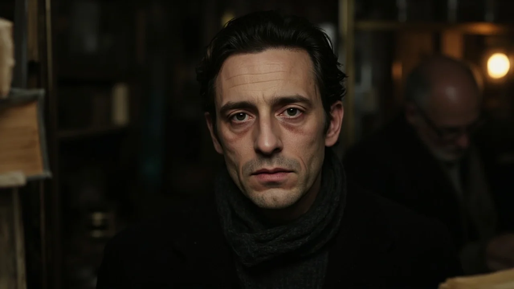
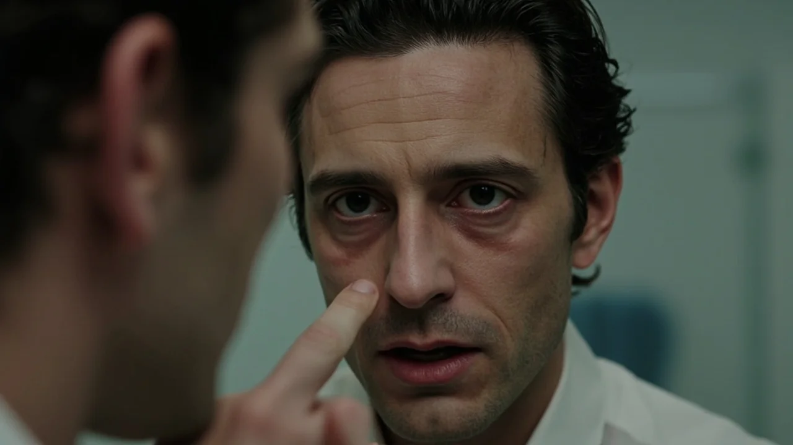
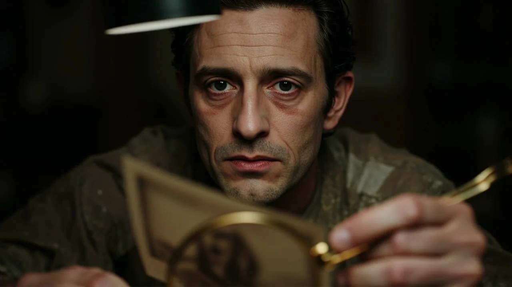
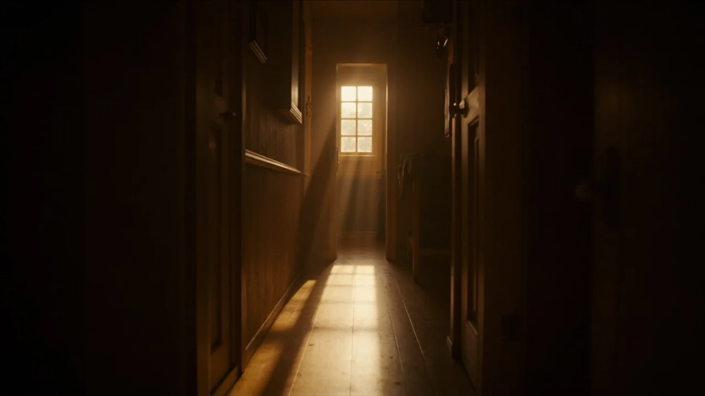
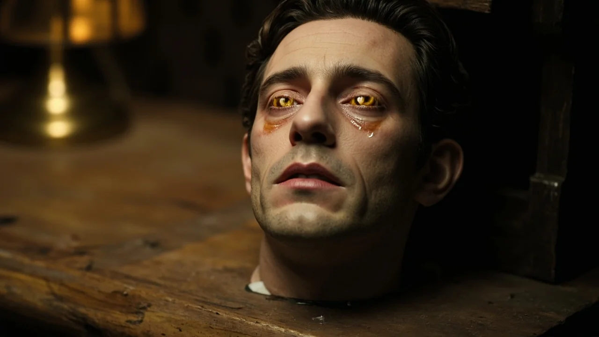

El callejón de los Plateros olía a lluvia y carbón de estufa. Daniel empujó la cancela de la tienda de antigüedades huyendo del vendaval de noviembre. Buscaba un pretexto para no volver a casa, donde una resma de cuartillas en blanco acumulaba polvo sobre el escritorio. A sus cuarenta años, la sequía creativa se le había pegado al paladar como una costra amarga.
Don Anselmo levantó la vista de un misal deshojado. Limpiaba sus quevedos con la manga del chaleco, rodeado de gramófonos mudos, espejos sin azogue y relojes de péndulo parados en horas distintas.
—No tengo novedades de librería, Daniel —dijo el viejo—. Solo trastos de herencias.
Daniel no respondió. Caminó entre dos aparadores de nogal hasta el rincón oscuro del fondo. Sobre una banqueta baja reposaba el muñeco.
Era una figura de unos cincuenta centímetros, de porcelana pesada y acabados antiguos. Tenía el cabello negro azabache, lacio y peinado con raya a la izquierda. Su cuerpo vestía un traje de marinero de paño azul oscuro con botones de latón deslustrados. Pero lo que obligó a Daniel a detenerse fueron sus ojos: dos esferas de cristal amarillento, turbias como aceite rancio, que devolvían una mirada fija. Su boca dibujaba una sonrisa infantil, quebrada por una finísima grieta que nacía en la comisura y se perdía bajo la barbilla. Según la inclinación de la luz, el gesto mudaba de la inocencia a una mueca burlona.
—¿De dónde ha salido? —preguntó Daniel.
Don Anselmo dejó el plumero sobre el mostrador:
—Llegó de una testamentaría en los valles del norte. Perteneció a varias generaciones de una familia acomodada. Todos los que lo guardaron acabaron mal. Muertes tempranas, achaques raros de vejez antes de tiempo. Esas cosas que cuentan para inflar precios.
Daniel dejó escapar una risa corta:
—Supersticiones de aldea. Me lo llevo. Necesito algo en el despacho que me mire mientras no consigo escribir una sola línea.
—Tú verás —masculló el anciano, envolviéndolo en papel de estraza marrón—. Son doscientos euros. Y hazme caso: no lo dejes en el dormitorio.

Daniel colocó el muñeco en la estantería del despacho, enfrente de la mesa de trabajo, flanqueado por enciclopedias y su lámpara verde. Con la luz tenue, la porcelana brillaba con frialdad lechosa. El traje azul marino caía rígido sobre las rodillas de tela rellenas de serrín, y aquellos ojos de cristal ámbar parecían converger sobre el folio vacío del carro de la máquina.
Trabajó hasta la medianoche sin fruto. Apenas redactó tres párrafos vacilantes que tachó con saña. Rendido, apagó la lámpara y se fue a la cama.
La pesadilla llegó antes del alba.
Soñó con una estancia estrecha que apestaba a humedad y alcanfor. En una esquina, en el suelo de tarima, un niño descalzo de unos ocho años lloraba con la frente en la pared. Vestía el mismo traje azul de marinero. Al acercarse para tenderle la mano, el chiquillo giró la cabeza: su rostro no tenía piel, sino porcelana blanca atravesada por venas azules muy tenues.
—Devuélvemelo —suplicó el niño con voz cristalina y rota—. Devuélvemelo, Daniel. Es mío, tú me lo quitaste.
Daniel despertó de golpe, bañado en sudor frío. El reloj marcaba las seis y diez.
Se levantó aturdido y fue al baño. Al arrojarse agua y alzar la vista hacia el espejo, se detuvo. Justo entre las cejas había un surco vertical profundo que jamás había tenido; una arruga áspera y marcada, como la de un hombre de cincuenta años. Se frotó con el pulgar creyendo que era la marca de la almohada, pero la piel permaneció hendida.
Fue al despacho con una taza de café. La figura seguía sobre el anaquel de caoba, inmóvil. Daniel encendió la lámpara y examinó la cabeza con lupa: la grieta que corría desde la comisura hacia el cuello parecía haberse ensanchado unos milímetros, dejando al descubierto una fibra interna sonrosada.
Durante las dos semanas siguientes, el tiempo se precipitó sobre Daniel como un veneno invisible.
Al principio fueron dolores sordos en las articulaciones. Las falanges se le inflamaban al golpear las teclas y las rodillas le cruían al subir la escalera. Luego llegó el cansancio. Dormía ocho horas para despertar con la sensación de haber cargado vigas de plomo.
Una mañana, al afeitarse, vio caer al lavabo mechones enteros de pelo blanco. En quince días, sus sienes castañas se volvieron plateadas y la línea del cabello retrocedió dejando una calvicie amarillenta. Los párpados le pesaban caídos y la piel de las mejillas se descolgó en pliegues marchitos.

Acudió a la consulta del doctor Morales, su médico de cabecera. El facultativo lo auscultó y revisó los análisis con desconcierto:
—Los parámetros son imposibles para un hombre de cuarenta años, Daniel. Tienes una pérdida de masa ósea brutal y un desgaste celular propio de un anciano de setenta. ¿Qué estás comiendo? ¿Te has expuesto a algún producto tóxico?
—No he salido de casa, doctor. Solo paso las horas intentando escribir.
—Pues tu organismo colapsa como si hubieran pasado tres décadas en dos semanas. Te mando al especialista para un ingreso inmediato.
Daniel no fue al hospital. Sabía que las agujas no encontrarían nada que la medicina pudiera nombrar.
En su despacho, los cambios en el muñeco ya no eran una sospecha sutil. La porcelana de las mejillas había perdido su blancura gélida; ahora mostraba una tersura cálida, con un rubor encarnado en los pómulos. Las pestañas lucían finas y flexibles como vello humano auténtico. Y la noche del jueves, cuando Daniel se levantó arrastrando las pantuflas para servirse agua, vio con claridad cómo las pupilas amarillentas giraban despacio en sus cuencas para seguir sus pasos.
La obsesión superó al pavor. Apoyándose en un bastón de fresno de su abuelo, Daniel regresó a la tienda de antigüedades del callejón de los Plateros.
Don Anselmo tardó unos instantes en abrir. Al enfocar la vista sobre la figura encorvada que temblaba en el umbral, con el gabán colgando de unos hombros famélicos, retrocedió lívido:
—¿Daniel? Santo Dios… pero ¿qué te ha ocurrido?
—El muñeco —graznó Daniel con una voz rasposa que no reconoció—. Necesito saber de qué familia venía. No me mientas, Anselmo. Dijiste que los anteriores dueños murieron de vejez antes de tiempo.
El comerciante lo condujo a la trastienda sin preguntar. Sobre una mesa repleta de legajos, extrajo una caja de latón con el inventario notarial de la hacienda de los Valcárcel, liquidada tras la muerte del último heredero.

Entre facturas y escrituras, Anselmo deslizó una fotografía de estudio en tono sepia, fechada en mil novecientos doce.
Daniel acercó la lupa con manos trémulas.
En el centro aparecía un hombre sentado en un sillón de mimbre en mitad de un jardín. Vestía levita oscura y sostenía en las rodillas a un niño pequeño. El chiquillo, de unos ocho años, tenía el pelo negro azabache peinado de raya, los ojos claros y el traje de marinero: era exactamente la figura del muñeco.
Pero cuando Daniel desplazó el cristal hacia el rostro del caballero sentado, un golpe helado le paralizó el pecho.
Aquel hombre tenía sus mismos pómulos, la forma recta de su nariz, la barbilla partida y la mirada intensa de Daniel a los treinta años. No era un parecido casual: era su propio rostro retratado un siglo atrás.
—No absorbe la vida para alimentarse —susurró Daniel—. Está reconstruyendo un cuerpo. Usa los años de quienes lo compran para volver a nacer.
Don Anselmo lo miró aterrado, sin atreverse a tocarlo.
Daniel regresó a su casa arrastrando las piernas con un dolor punzante en las caderas. La respiración le ardía en la garganta.
En el despacho, el muñeco ya no parecía un objeto inanimado. Sus labios eran rosados y húmedos, entreabiertos sobre dos hileras de dientes diminutos. El traje de marinero se tensaba sobre un pecho que parecía hincharse con lentitud casi imperceptible.
—No te quedarás con lo que es mío —dijo Daniel con un hilo de voz.
Avanzó hacia la chimenea de hierro. Con dedos agarrotados, encendió unas teas de pino hasta que las llamas prendieron sobre los leños secos de encina. El fuego crepitó con violencia, llenando la habitación de un resplandor naranja.

Daniel se volvió hacia la estantería y aferró al muñeco por el torso. La piel bajo la ropa estaba caliente, palpitante de una fiebre antinatural. El muñeco pesaba como si la carne ganase densidad sobre el serrín. Daniel lo arrojó con sus últimas fuerzas al fondo de la chimenea.
La figura cayó sobre las brasas. El paño azul humeó de inmediato, soltando una peste densa a lana chamuscada y barniz hirviente. Las llamas envolvieron la cabeza de porcelana, ennegreciendo las mejillas. Daniel se dejó caer en el sillón de orejas, jadeando con la frente en el bastón, contemplando la cremación durante tres horas.
A las dos de la madrugada, el fuego se redujo a un lecho de cenizas grises.
Daniel se arrodilló frente al hogar con el atizador. Apartó los tizones, buscando los fragmentos de loza deshecha para cerciorarse de la destrucción del engendro.
Entre el polvo calcinado emergió la cabeza. La superficie estaba tiznada de hollín y los ojos de cristal habían estallado por el calor; pero la porcelana no se había quebrado. Y en la mitad inferior del rostro, intacta entre las cenizas frías, la sonrisa curvada se mantenía perfecta, triunfal, desprovista de cualquier quemadura.
La madrugada lo sorprendió tendido en la cama, incapaz de levantarse.
Daniel comprendió que el final había llegado. No podía mover los brazos; las piernas yacían bajo el embozo como dos maderos secos. Su piel era un pergamino amarillento pegado a los huesos y la vista se le nublaba en una catarata lechosa. Tenía el cuerpo decrépito de un anciano al que se le apaga el latido.
Entonces, en el pasillo, resonaron pasos.
Eran pisadas ágiles, elásticas, firmes sobre la tarima de roble.
Una silueta cruzó el umbral y se detuvo a los pies de la cama, recortada contra la penumbra del amanecer.
Era un joven de unos veinticinco años, de porte erguido y hombros anchos. Vestía la camisa blanca de lino y la cazadora de cuero que Daniel guardaba en el armario. Su rostro, iluminado por la luz fría del alba, era fresco, limpio, de piel tersa y mandíbula firme. El cabello castaño oscuro le caía sobre la frente con ondas naturales, y sus ojos castaños brillaban con vitalidad insaciable.

Era Daniel. El Daniel que había sido veinte años atrás, reconstruido con cada minuto, cada aliento y cada latido que le habían sido arrancados.
El joven contempló al anciano postrado. No había odio en sus facciones; solo una satisfacción sosegada. Se inclinó levemente hacia adelante, le dedicó un guiño cómplice y dio media vuelta, caminando con paso ligero hacia la salida. La puerta de la calle se abrió y se cerró con un chasquido suave.
Daniel abrió la boca para gritar. Quiso pedir socorro, llamar a los vecinos, maldecir al ladrón que se marchaba con su juventud. Pero de su garganta arrugada no brotó palabra alguna. Solo escapó un gemido agudo, balbuceante y quebrado: el llanto indefenso de un niño pequeño atrapado en la cuna.
A las nueve de la mañana, don Anselmo abrió el cerrojo de la tienda de antigüedades del callejón de los Plateros. La lluvia de noviembre había cesado, dejando los adoquines relucientes como espejos de plomo.
Apenas encendió la bombilla del mostrador cuando la campanilla de latón de la puerta repicó alegremente.
Un muchacho joven, bien plantado y de rostro despejado, cruzó el umbral. Llevaba una chaqueta de cuero que le sentaba a la medida y sostenía bajo el brazo una caja de zapatos atada con un cordel.
—Buenos días —saludó el joven con voz templada—. Me han dicho que usted compra objetos curiosos. He encontrado esto limpiando el desván de una casa vieja que acaban de desalojar. Si me da algo por ello, me vendrá bien para el billete de tren.
Don Anselmo asintió con desgana:
—Depende de lo que sea, hijo. Ponlo sobre el mostrador.
El muchacho desató el cordel, abrió la caja y retiró dos pliegos de papel de periódico amarillento. Luego, con una sonrisa cortés, se despidió tocándose el ala invisible del sombrero y salió a la calle silbando una melodía despreocupada.
Don Anselmo metió las manos en la caja para extraer la pieza.
Era un muñeco nuevo de porcelana, de unos cincuenta centímetros, vestido con pantalón de pana y jersey gris de lana. Su cabeza, de una loza blanquecina impecable, acababa de ser modelada.
El anticuario acercó la lámpara para tasar el esmalte, pero al ver el rostro del juguete, los dedos se le paralizaron en el aire. La mandíbula se le aflojó y el aire se le quedó atascado en el pecho.
Las facciones de porcelana no pertenecían a ningún niño. Eran los rasgos inconfundibles de Daniel: su nariz recta, sus pómulos afilados y su boca abierta en una mueca silenciosa de angustia infinita. Y bajo los ojos de cristal amarillento, dos lágrimas líquidas y transparentes brotaban de los lagrimales, resbalando despacio por las mejillas de loza hasta humedecer la madera vieja del mostrador.